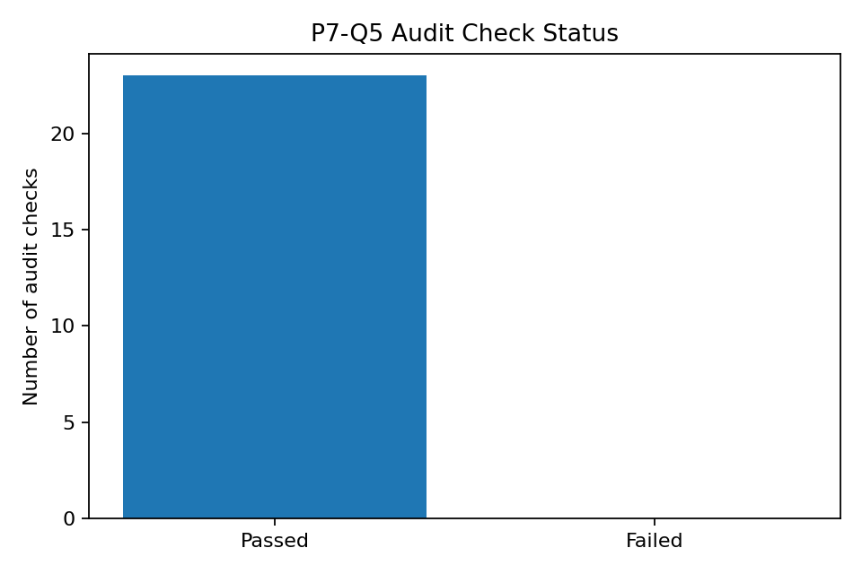
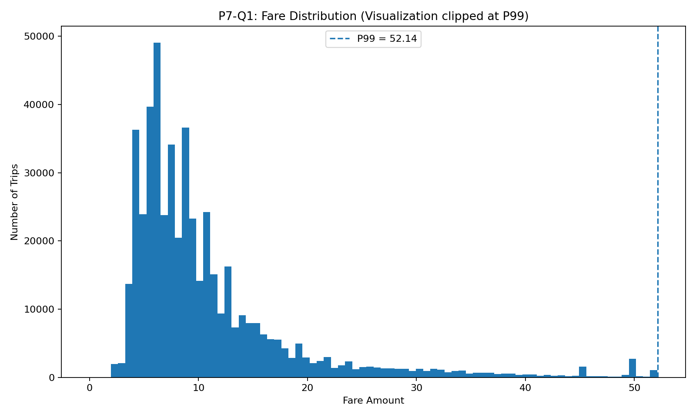
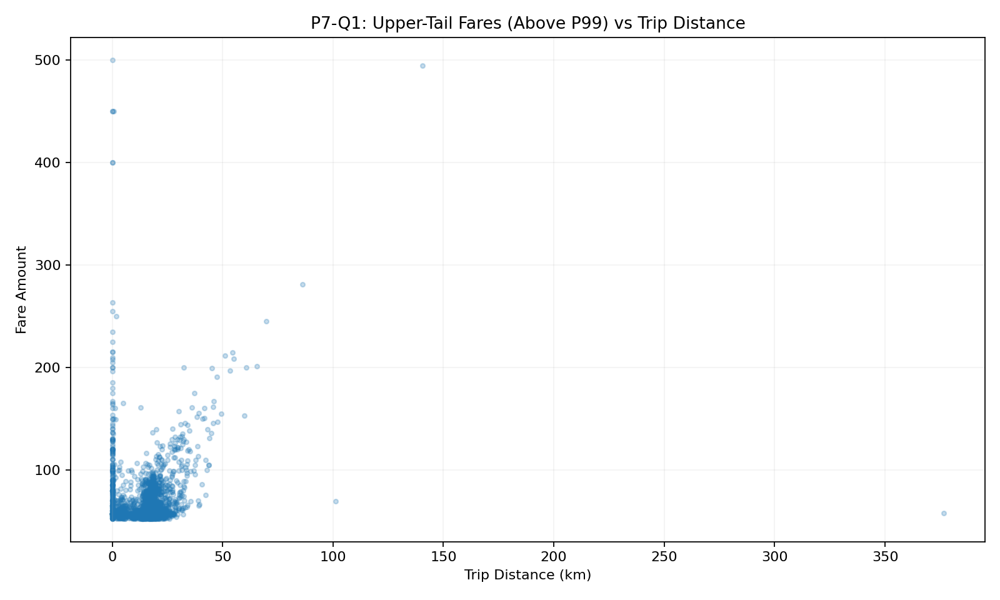
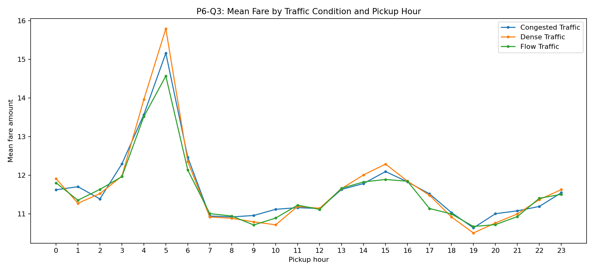
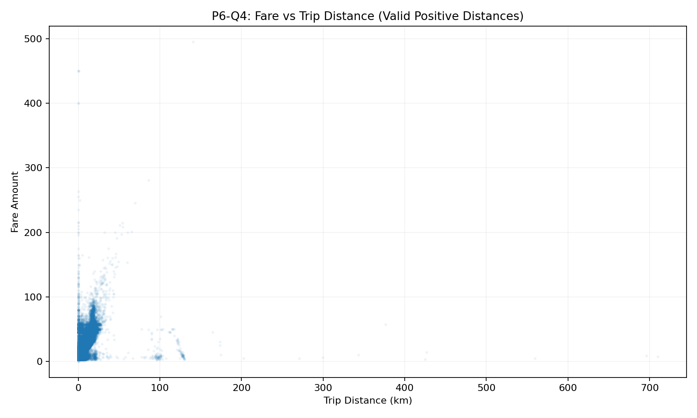
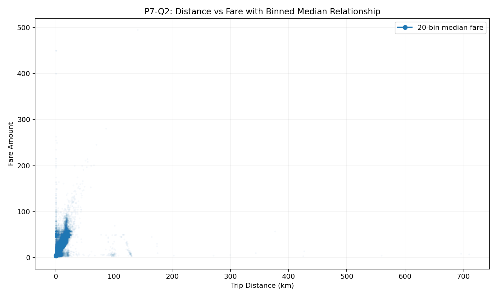
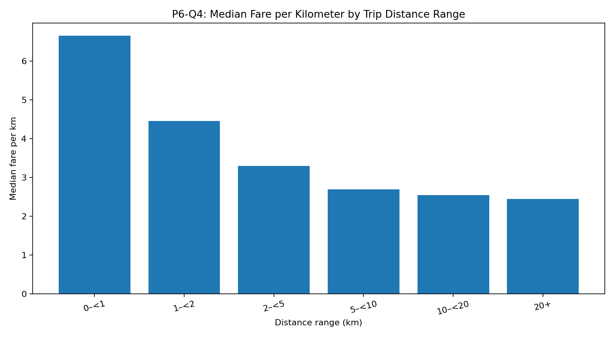
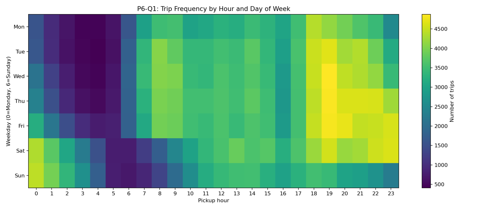
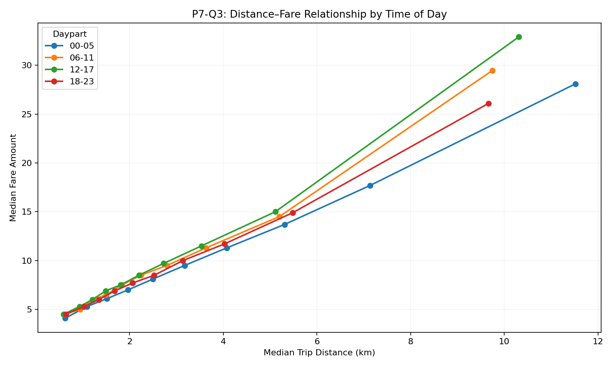
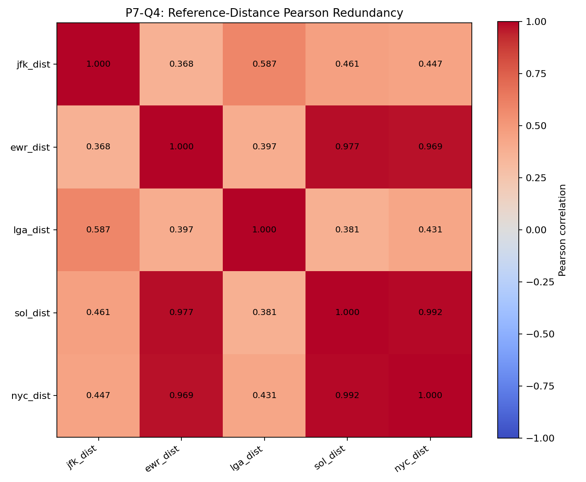

A concise analytical journey from data quality and EDA through controlled experiments, an untouched later-period test set, and explicit error analysis.
The project treats fare_amount as a continuous regression target and asks how trip-level, temporal, geographic, distance, reference-distance, passenger and categorical information can support prediction.
SHA-256
1170f27c73a777dacd0c4712b75088ccdb1cdacb7c955368d5239a77bbad9509
Identifier-like fields were reviewed separately from analytical predictors; the audit did not establish leakage merely from identifier structure.

No permanent feature engineering was applied to df_clean. Modeling transformations were performed inside the modeling workflow rather than altering the source dataset.

Above P99: 5,000 observations. Above $100: 214; above $200: 26; above $300: 7; above $400: 5.

1,796 passenger-count values were missing.
All category medians = $8.50.
All category medians = $8.50.
Mean and median differ because the fare target is right-skewed.


| Variable | Pearson r |
|---|---|
| distance | 0.670893 |
| nyc_dist | 0.290524 |
| ewr_dist | 0.275987 |
| jfk_dist | −0.265021 |
| sol_dist | 0.248432 |
| lga_dist | 0.079585 |
| bearing | −0.024115 |





Lowest cell: Tuesday 04:00 = 409.
JFK −0.2650 · EWR +0.2760 · LGA +0.0796.
EWR↔SOL 0.9775 · EWR↔NYC 0.9694.
Constant baseline → Ridge → HistGradientBoostingRegressor with the fixed approved configuration. The final target experiment compares raw fare with log1p(fare_amount).
| Experiment | MAE | RMSE | R² |
|---|---|---|---|
| E01 Constant | 6.520924 | 11.381812 | −0.033938 |
| E02 Ridge | 4.008651 | 7.736223 | 0.522328 |
| E03 HGB baseline | 2.856050 | 6.003070 | 0.712380 |
| E05 Temporal | 2.498246 | 5.447252 | 0.763175 |
| E06 Geographic | 2.129567 | 4.807872 | 0.815508 |
| Experiment | MAE | RMSE | R² |
|---|---|---|---|
| E07 Reference distance | 2.113989 | 4.746566 | 0.820183 |
| E08 Categorical | 2.112468 | 4.741573 | 0.820561 |
| E09 Missing-value strategy | 2.094547 | 4.733094 | 0.821202 |
| E10 log1p target | 2.039646 | 4.968136 | 0.803003 |
Final target: log1p(fare_amount)
Therefore the selection is explicitly tied to the declared primary criterion. It is not a claim of universal superiority.
MAE by distance band. RMSE reaches 27.360 for 20+ km.
Overall test P90 absolute error = 4.114; P95 = 6.067; P99 = 14.282.
The completed project is strongest when its claims stay tied to verified evidence: descriptive findings remain descriptive, experiment results remain validation results, the 2015 H1 metrics remain the final test result, and the remaining weaknesses remain visible.